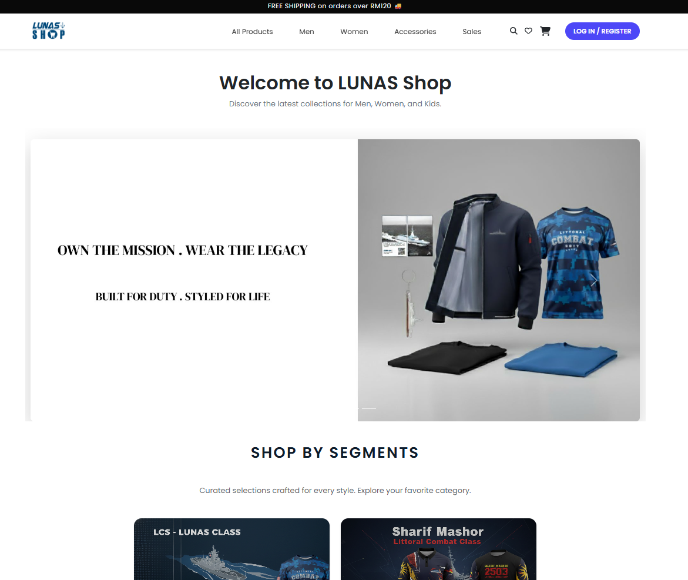
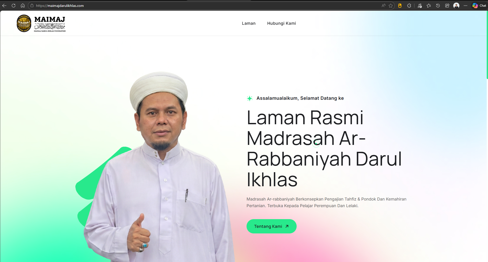
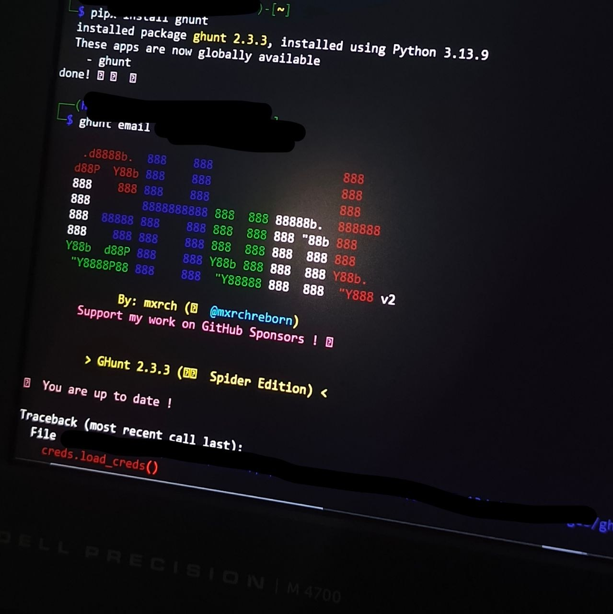

Featured Project
LUNAS E-Shop System
Sistem e-commerce dalaman untuk Lumut Naval Shipyard — pengurusan katalog, pesanan, dan transaksi secara digital.

IMS IT · Information Systems · Technician & System Developer
Dedicated System Developer specializing in
PHP,
Laravel,
JavaScript.
Focused on building robust digital solutions and scalable enterprise or any other applications.
Currently pursuing Postgraduate studies at UiTM Shah Alam in Information Technology
to further expertise in strategic information architecture.
Saya Abdul Shakir Hakim, seorang graduan Pengurusan Sistem Maklumat yang memfokuskan kepada pembangunan sistem logik dan infrastruktur digital. Selepas menamatkan ijazah sarjana muda, saya kini sedang melanjutkan pengajian di peringkat Sarjana (MSc in Information Technology) di UiTM Shah Alam untuk mendalami selok-belok pengurusan data dan seni bina sistem peringkat tinggi.
Pengalaman praktikal di jabatan Information Systems, Lumut Naval Shipyard (LUNAS) telah mendedahkan saya kepada operasi IT gred industri. Persekitaran kerja yang kritikal dan berdisiplin tinggi di pangkalan tentera laut tersebut membentuk standard saya dalam memastikan setiap aplikasi yang dibangunkan mempunyai tahap kebolehpercayaan, prestasi, dan keselamatan yang ketat sebelum digunakan.
Selain ekosistem korporat, saya aktif membina dan menyelenggara sistem secara peribadi, dari pembangunan web penuh (full-stack) hingga ke konfigurasi pelayan (server) Linux. Dalam aliran kerja moden, saya turut mengaplikasikan kepakaran sebagai Pakar Prom (Prompt Engineer). Saya mengintegrasikan bantuan AI secara strategik untuk mempercepatkan penulisan kod, mengoptimumkan logik, dan menyelesaikan ralat (debugging). Ini memastikan proses pembangunan sistem menjadi jauh lebih efisien berbanding kaedah pengekodan manual tradisional.
Sistem e-commerce dalaman untuk Lumut Naval Shipyard — pengurusan katalog, pesanan, dan transaksi secara digital.


Platform CMS untuk institusi Madrasah — pengurusan kandungan, kos operasi dan maklumat awam secara mandiri.

Analisis kelemahan rangkaian menggunakan Wireshark dan Nmap — kenal pasti, dokumentasi, dan cadangan mitigasi ancaman.
Personal web server berjalan di atas Vivo Y91i menggunakan Termux + nginx + PHP-FPM + MariaDB. Exposed melalui ngrok dan diproxy dengan Cloudflare Workers.
Sama ada untuk peluang kerja, kolaborasi projek, atau perbincangan teknikal berkaitan pembangunan sistem dan IT — inbox saya sentiasa terbuka.